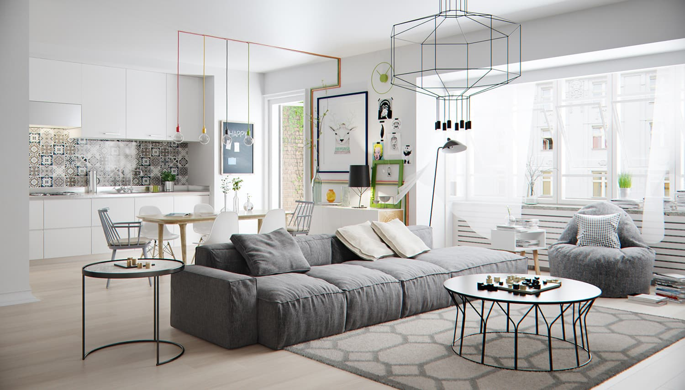

Stil
scandinav
„Mai multe lucruri frumoase în viața de zi cu zi”, așa sună sloganul suedez care rezumă întreaga filozofie a celebrului stil scandinav în designul interior. Ușor de recunoscut datorita paletei cromatice luminoase, a predominanței lemnului în decor și a simplității, stilul scandinav nu a evoluat ca o reacție la adresa vreunui curent artistic prea bogat în ornamente, ci s-a născut, pur și simplu, în casele danezilor, finlandezilor, norvegienilor și suedezilor. Iernile lungi i-au ajutat să dezvolte și să perpetueze elementele culturale specifice, însă – și acesta este un lucru mai puțin cunoscut – stilul scandinav diferă într-o oarecare măsura de la o țară nordică la alta.
Dar cum a căpătat trendul scandinav o asemenea amploare, care sunt elementele sale specifice, care sunt particularitățile pieselor de mobilier și, nu în ultimul rând, ce reguli de amenajare ar trebui să te inspire dacă-ți dorești un decor scandinav în locuința ta? Vei afla răspunsurile la toate aceste întrebări în rândurile de mai jos.
|  |
●Amenajări în stil scandinav – Reguli și sugestii
Iți poți pune cu ușurința la punct, de exemplu, un living în stil scandinav, atâta vreme cât nu-i pierzi din vedere esența: într-un spațiu practic, primitor și confortabil nu găsești nici prea puține obiecte, nici prea multe, ci exact atâtea cate îți trebuie. Identifica nevoile familiei tale, inspiră-te din sugestiile noastre și dă locuinței tale un aer scandinav, proaspăt, modern și minimalist.